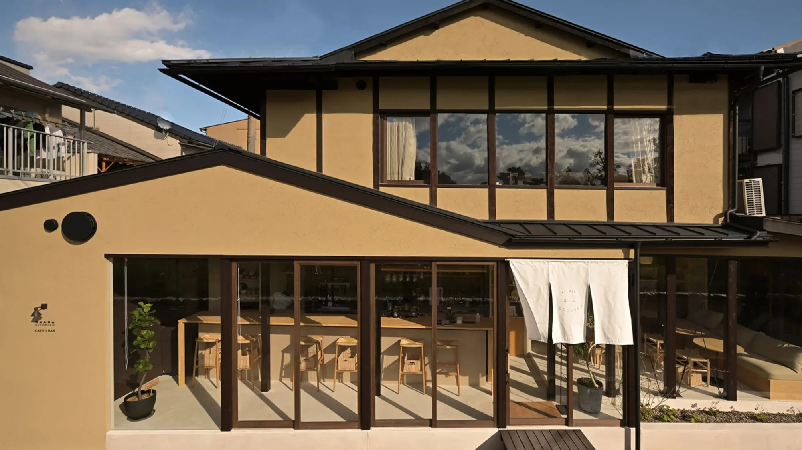
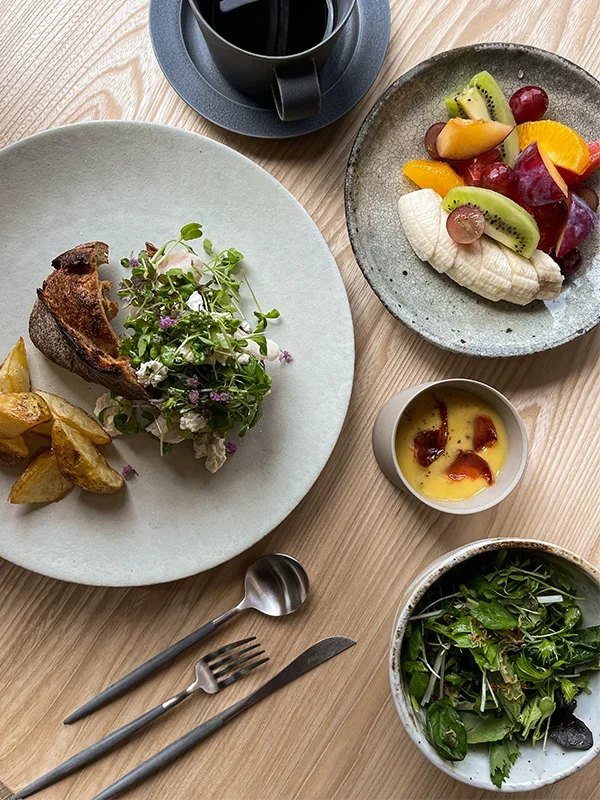
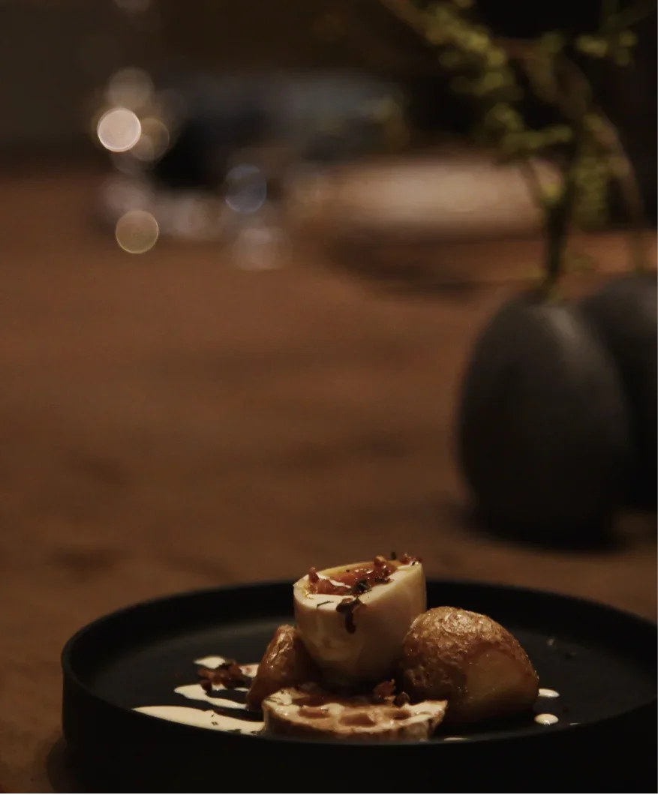

The morning plate
A changing selection of seasonal ingredients, served with care.
Coffee, a seasonal plate, and a little time to yourself. A place to begin the day, or let it unfold.

The sound of water warming. A cup held in both hands. Something nourishing, made with care. Here, the everyday becomes an occasion to pause.
Our café brings food, craft and hospitality together, with room for conversation and a slower start.


Find us at MAANA Kiyomizu, where a visit to the café can become a walk through the neighbourhood, a browse in the shop, or the beginning of a stay.